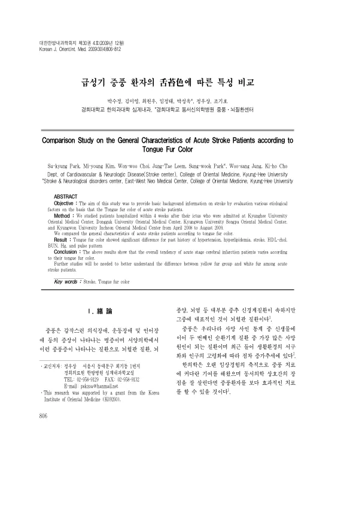

급성기 중풍 환자의 舌苔色에 따른 특성 비교
Park Sk, Kim My, Choi Ww, Leem Jt, Park Sw, Jung Ws, Cho Kh
The Journal of Internal Korean Medicine 30(4):806-812

첫 장 · 오픈액세스First page · open access
논문 소개Summary
설태의 색에 따라 급성기 중풍 환자의 특성이 어떻게 갈리는지 살핀 연구입니다. 설진은 한의 진단법 가운데 객관화가 쉬운 편이어서 수량화와 재현성 확보가 가능하다는 이점이 있습니다. 2008년 4월부터 이듬해 8월까지 네 개 한방병원에 입원해 서면 동의한 667명이 대상이었고, 황태군과 백태군에 들지 않는 환자는 제외했습니다. 설태색은 고혈압과 고지혈증, 뇌졸중의 과거력, 고밀도지단백 콜레스테롤, 혈중요소질소, 헤모글로빈, 맥상에서 유의한 차이를 보였습니다. 저자들은 이 결과가 급성기 뇌경색 환자의 전반적 경향이 설태색에 따라 다르다는 것을 보여 주지만, 황태군과 백태군의 차이를 더 잘 이해하려면 후속 연구가 필요하다고 적었습니다.
A study of how the characteristics of acute stroke patients differ according to tongue fur colour. Tongue diagnosis is among the more readily objectified methods in Korean medicine, offering the advantage that quantification and reproducibility are attainable. Six hundred and sixty-seven patients who gave written consent, admitted within four weeks of onset to four Korean medicine hospitals between April 2008 and August 2009, were included; those falling into neither the yellow-fur nor the white-fur group were excluded. Tongue fur colour showed significant differences in past history of hypertension, hyperlipidaemia and stroke, and in high-density lipoprotein cholesterol, blood urea nitrogen, haemoglobin and pulse pattern. The authors write that while the overall tendency of acute cerebral infarction patients varies with tongue fur colour, further study is needed to understand the difference between the yellow-fur and white-fur groups.
인용Cite
Park Sk, Kim My, Choi Ww, Leem Jt, Park Sw, Jung Ws, Cho Kh. 급성기 중풍 환자의 舌苔色에 따른 특성 비교. The Journal of Internal Korean Medicine. 2009;30(4):806-812.